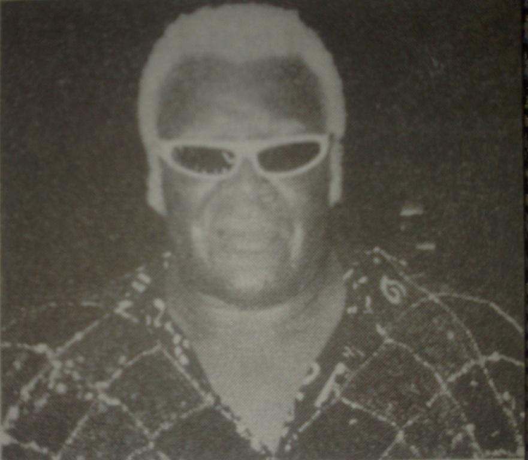

Глава 9
Перевод Тани (Dark Bird) для VSplanet.net
Я доучился до 11 класса, мы с Ником изучали французский в одном классе. Я учил французский 11 лет, но все чему научился, так это досчитать до десяти (une, deux, trois, quatre, cinq… Ладно, это только до пяти, оставьте меня в покое!) Да, я не уделял ему много внимания. Мы с Ником всегда были любителями фантастики и комиксов, поэтому на уроках мы рисовали. Мы хотели создать и нарисовать наших собственных героев и приступить к букингу рестлинг-шоу. На переменах мы все собирались в «ринге» рядом со школьной библиотекой, и «прорабатывали» ход матчей. Да, как я уже сказал, мы были ботанами, но нам было весело. Ник был Декер Хард, Джей был Сладкий Папочка Уродец, Джон Посавак был Парень Посс-Вак, а я был Блондин Бомбер… Шплинт (брутально, я знаю). У нас были и другие имена — Порочный Вергилий Грузовик Ест Меня, Кошачий Сарай Кейт Браун и Канадские Кукурузные Хлопья (не спрашивайте меня, почему). Кто-то из нас не участвовал в матче, а сидел на столике для пикника и оглашал результаты боев. Двое «участников боя» очень аккуратно боролись рядом. Мы определенно знали, что легко получить травму, поэтому мы были осторожны.
По некоторым причинам в это время я начал приобретать репутацию «крутого парня». Из-за этого какой-то парень по имени Джейк Вивиан, который уже закончил школу, решил, что хочет со мной подраться. Мой тестостерон был на уровне, так что почему нет? У меня к нему не было претензий, но он решил до меня докопаться. Позже я узнал, что он хотел раздуть свою репутацию, надрав мне задницу. Это у него не слишком хорошо получилось. Все произошло на заднем дворе за школой. Со мной был Джон, мы вышли из задних дверей, увидели, что уже собралось прилично народу. Джейк стоял в центре, пытаясь изображать Жан-Клода ван Дамма. Я подошел к нему, ученики окружили нас. Но через полминуты все разошлись, а Джейк лежал вниз лицом, пытаясь зализать раны. Нет, я совсем не Мохаммед Али, я не люблю драк, но иногда вы просто должны это сделать. Больше я не дрался, мои славные бои еще были далеко впереди.
Страсть к рестлингу не утихала, и очень скоро она снова получила подарок из Toronto Star. На этот раз это были не бесплатные билеты, это было бесплатное обучение рестлингу, то есть возможный билет к моей мечте. В Star была еженедельная колонка рестлинга, которую я добросовестно читал. Однажды я прочитал магические слова: «Если вы мечтаете стать рестлером, вот ваш шанс!» Это привлекло мое внимание. Всё, что я должен был сделать, это написать эссе, подробно описывая, почему я хочу быть рестлером. Приз: бесплатное обучение рестлингу! Я схватил карандаш и бумагу, попытавшись подробно описать, почему я должен победить! Я писал и переписывал. Я потерял счет всех черновиков, но в итоге я остался доволен. Я старался сохранять спокойствие, пытался избежать неловких мыслей, думаю, у меня получилось. Эссе было отправлено по почте в спортзал Салли, расположенный в Паркдейл, довольно жестком райончике Торонто. Именно там Сладкий Папочка Сики и Рон Хатчинсон должны были подготовить победителя к войнам ринга.

Мой будущий тренер, Сладкий Папочка Сики
Джей поклялся, что он тоже напишет эссе, но в итоге отказался и отложил своё обучение рестлингу еще на два с половиной года. Он так и не объяснил, почему он так поступил. Я не хочу подробно на этом останавливаться, но я всегда считал, что если вы боитесь рисковать, то на какой результат вы рассчитываете?
Конечно, как только я отправил эссе, я начал беспокойно ожидать результата. Мой разум был постоянно занят мыслями о нем, поэтому мне нужно было как-то снять напряжение. К счастью, в очередной раз на помощь пришел мой хороший приятель Ник. Он спас меня отличной идеей — в самое нужное время.